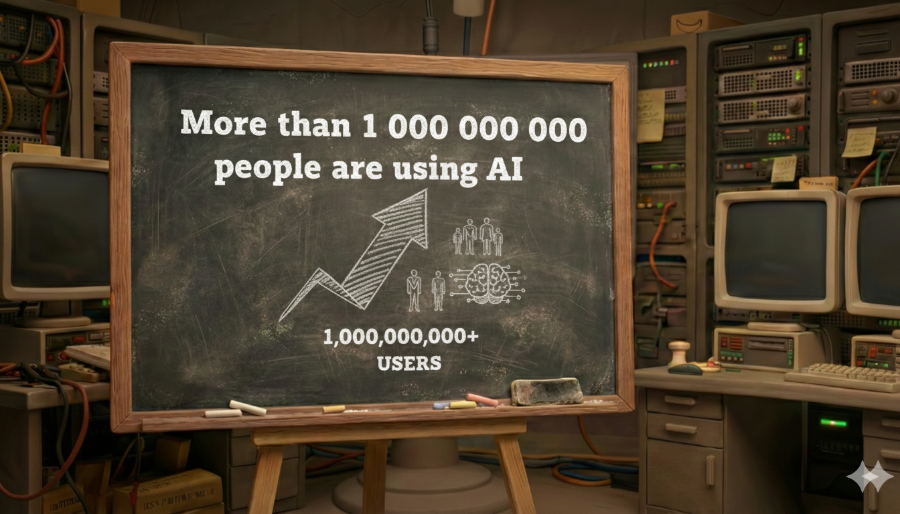
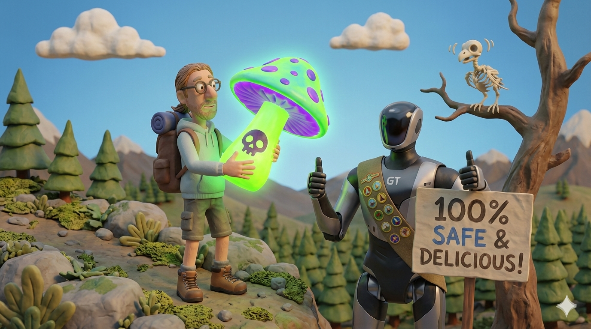

Welcome to the shownotes for the GenZ AI Literacy 101 talk.
Here you will find all the resources, links, and references mentioned during the
presentation.
In a world where AI is rapidly becoming part of our daily lives, AI
literacy is no longer a luxury but a necessity. Understanding how AI works, its
limitations, and how to use it responsibly is crucial for navigating the digital age
(Digimeter
2026: AI in Vlaanderen - source: VRT NWS).
PART I - The lab is open

We begin by defining what AI literacy actually means and why it matters. This section explores the current state of AI adoption globally and locally, providing a data-driven foundation for understanding the technology's rapid expansion.
- AI Literacy (source: Wikipedia): A foundational overview of AI skills and knowledge.
Global Adoption & Trends
- Digital 2026: Global Overview Report (source: DataReportal): Comprehensive global digital and AI adoption data.
- Microsoft global ai adoption report (source: Microsoft): Insights into workflows and productivity.
Use Cases & Demographics
- Generative AI Statistics 2026 (Aggregated Industry Review) (source: Master of Code): Key growth figures.
- Generative AI Snapshot Research Series (source: Salesforce): Sentiment toward AI in business.
Regional Data (Belgium & EU)
- Eurostat: AI Use in Enterprises 2025 (source: Eurostat): Official EU adoption statistics.
- imec.digimeter 2024 / 2025 (source: imec): Local digital trends in Flanders.
- Generate your own reports and stats on AI (source: Statcounter): Custom charts on market shares.
PART II - The ghost in your pocket
AI is no longer a futuristic concept; it is already woven into the fabric of our daily lives. From smartphone apps to recommendation algorithms, this section reveals the "ghost" in your pocket and how AI silently shapes our digital experiences.
- Ai Is All Around Us (source: That's AI): Educational unit on AI in daily objects.
PART III - Not a Brain, Just a Mirror

Demystifying the technology, we look at how AI actually works - not as a sentient brain, but as a sophisticated mirror of human data. We cover the history, the major players, and the "ChatGPT moment" that changed everything.
The AI landscape:
- What Is Artificial Intelligence (source: Google Cloud): Google's basics of machine learning.
The chatGPT moment
- After the ChatGPT moment: Measuring AI's adoption (source: Epoch AI): Analysis of mass adoption.
- Zero to 100 million: ChatGPT's individual adoption (source: LinkedIn): The story of record growth.
The history of AI
- History of Artificial Intelligence (source: Wikipedia): From early concepts to generative AI.
Who's behind AI
- Time's AI Architects 2025 (source: Time): Key figures building the future.
- VRT NWS: De 'AI-architecten' zijn Time's Person of the Year (source: VRT NWS): Local report on the leaders behind the AI revolution.
- Top 10 AI Companies 2025 (source: AI Magazine): The most influential corporations.
It's only the beginning
- Gartner Hype Cycle for AI (source: Gartner): Expectations vs. reality.
AGI
- Artificial General Intelligence (AGI) (source: Wikipedia): Machines matching human cognition.
PART IV - The Math Behind the Magic

Peeling back the curtain, we dive into the technical and physical reality of AI. We explore the massive data centers, the energy consumption, the costs, and the complex mathematics that make these models possible.
AI datacenter
 AI Hypercomputer: A visual tour of infrastructure powering Google Cloud.
AI Hypercomputer: A visual tour of infrastructure powering Google Cloud.
 Inside Amazon's new AI supercomputer
Inside Amazon's new AI supercomputer
massive demand for hardware
- Can Nvidia's 'Hyper Moore's Law' Spark An AI Revolution? (source: Forbes): Why hardware is outpacing software.
- Micron AI memory shortage: HBM Nvidia Samsung (source: CNBC): Supply chain struggles for memory.
- Western Digital sold out for 2026 (source: Tom's Hardware): AI demand affecting traditional storage.
- AI memory chips for PC & Smartphone (source: NYT): Rising hardware costs for users.
- Data center protests in America (source: VRT NWS): Local resistance to power-hungry farms.
 Real Reason RAM Prices Are Skyrocketing: Economics of the memory market.
Real Reason RAM Prices Are Skyrocketing: Economics of the memory market.
 Latest Victims of the Global RAM Shortage: Smaller industries getting
squeezed.
Latest Victims of the Global RAM Shortage: Smaller industries getting
squeezed.
 The RAM Crisis Keeps Getting Worse: Shortage updates.
The RAM Crisis Keeps Getting Worse: Shortage updates.
Ecology (Energy & Water)
- Energy and AI: Energy demand from AI (source: IEA): IEA power consumption report.
- AI data center frenzy and your electric bill (source: CNBC): Why residential prices are rising.
- Anthropic on electricity price increases .(source: Anthropic)
- An examination of the environmental cost and power consumption per generated video. . (source: Reclaimed Systems)
- Data centers turn to ex-airliner engines as AI power crunch bites . (source: Tom's Hardware)
 Nuclear Facilities for AI: Tech turning to niche energy sources.
Nuclear Facilities for AI: Tech turning to niche energy sources.
 AI vs. Power Grid: Strain on aging electrical infrastructure.
AI vs. Power Grid: Strain on aging electrical infrastructure.
- Data centers and water consumption (source: Anthropic): Environmental impact beyond electricity.

Money
- The cost of ChatGPT (source: Futurism): Estimating daily operational expenses.
- Cost of training frontier AI models (source: Epoch AI): Capital requirements for next-gen models.
- OpenAI's 830 billion question: Can AI be profitable? (source: Long Yield): Questioning the long-term economic sustainability of the AI boom.
- OpenAI spending on AI-generated Sora videos (source: Forbes): A look into the financial investments required for OpenAI's Sora video generation.
- OpenAI financials and metrics (source: Sacra): Financial analysis and metrics of OpenAI's business model.
- AI's Power Demand: Calculating ChatGPT's Electricity Consumption (source: BestBrokers): An analysis of the electricity consumption and costs associated with ChatGPT's operations.
Training data
- How You've Been Training AI for Years Without Realising It (source: TechRadar): How CAPTCHAs use your clicks to label datasets.
- How Pokemon GO is helping robots deliver pizza on time (source: Technology Review): How game data and tracking might be aiding autonomous delivery systems.
- Data workers in AI: a new frontier of labour exploitation (source: Medium): Ethical issues in the data supply chain.
 Inside China�s Robot Training Factory: Human labor behind robot learning.
Inside China�s Robot Training Factory: Human labor behind robot learning.
 Human cost of AI training: Investigative report on heavy labor toll.
Human cost of AI training: Investigative report on heavy labor toll.
Training a model
- The Labubu Model (source: Kaggle): A practical Kaggle notebook showing how to train an image classifier.


- Intuitive Convolution (source: Better Explained): Understanding the core math behind computer vision.
Learn how to train your own model:
-
Learn how to train your own model
(source: fast.ai): Fast.ai lesson on deep learning.
-
Matrix multiplications
(source: MatrixMultiplication.xyz): Visual tool for understanding AI
arithmetic.
How does it Work
-
OpenAI Tokenizer Tool
(source: OpenAI): See how AI breaks down sentences into mathematical
chunks.
Trying it out
-
Anthropic: Project Vend 1
(source: Anthropic): Research into model inner workings and
interpretability.
-
Anthropic: Project Vend Phase 2
(source: Anthropic): Building on previous research to understand model
bias.

PART V - The amazing stuff
Beyond the text generators, AI is solving protein structures, assisting coders, and revolutionizing healthcare. This section highlights the truly transformative and positive applications of AI technology.
Alphafold
Uses AI to predict the precise 3D shape of proteins, accelerating drug discovery and our understanding of biology.
Find out more ...:
- AlphaFold (source: Wikipedia): DeepMind's breakthrough in predicting protein structures.
Code assistants
AI tools that help developers write, debug, and optimize code, boosting productivity and lowering the barrier to entry for programming.
Find out more ...:
- AI-assisted software development (source: Wikipedia): How Copilots and ChatGPT are changing programming.
AI in healthcare
From analyzing medical images to personalizing treatment plans, AI is assisting doctors in providing faster and more accurate care.
Find out more ...:
- AI in Healthcare (EU Commission) (source: EU Commission): Policy and use cases for AI in diagnosis.
Be My eyes
An app that connects blind and low-vision users with sighted volunteers or AI to help them navigate the world and complete daily tasks.
Find out more ...:
- Be My Eyes AI (source: Be My Eyes): Helping the visually impaired navigate the world using GPT-4 Vision.
AI in education
Transforming learning through personalized tutoring, automated grading, and adaptive curriculum that meets each student's unique needs.
Find out more ...:
- Artificial intelligence in education (source: Wikipedia): From adaptive learning to personal tutors.


PART VI - The problems

With great power comes great responsibility - and risk. Here we examine the critical issues: hallucinations, bias, deepfakes, and the "Swiss Cheese Model" of AI failure. (Swiss cheese model): Understanding how multiple small failures can lead to a disaster.
Misunderstanding of the prompt
A misunderstanding of a prompt occurs when the AI interprets a query in a way not intended by the user, leading to irrelevant, inaccurate, or off-topic responses. This often stems from ambiguity, lack of context, or overly complex instructions in the prompt, which causes the AI to make incorrect assumptions.

AI controversies
- AI controversies (source: Wikipedia): A list of notable ethics and safety incidents.
Hallucination
When an AI confidently generates false or illogical information that isn't based on its training data.
- What are AI hallucinations? (source: Google Cloud): Google Cloud's explanation of why models make things up.
- AI hallucinations (source: Wikipedia): General Wikipedia entry on model errors.

- AI-generated mushroom foraging books on Amazon (source: 404media): A dangerous example of hallucination in the real world.
Overconfidence
AI models often present incorrect answers with the same level of certainty as correct ones, making errors hard to spot.
AI chatbots are overconfident
- AI chatbots are overconfident (source: CMU): Why models don't tell you when they aren't sure.
Galactica
- The failure of Galactica (source: Technology Review): Meta's science AI that was shut down after just 3 days.
Bias
Systematic errors in AI output that create unfair outcomes, often reflecting historical prejudices present in the training data.
- What is AI bias? (source: IBM): IBM's primer on how human prejudices enter model training.
- Algorithmic bias (source: Wikipedia): Systematic and repeatable errors that create unfair outcomes.


- Gender and skin type bias: Stable Diffusion (source: Bloomberg): Powerful visual report on generative bias.
- Dog or wolf?

- Tank in the forest: Unintended consequences (source: LessWrong): A famous story of a model failing to generalize properly.
Reasoning flaws
Despite their fluency, AI models struggle with genuine logic, common sense, and multi-step reasoning problems.

- The Illusion of thinking (source: ArXiv): Scientific paper on the reasoning limitations of current LLMs.
The pizza glue incident
- The pizza glue incident (source: The Verge): When Google AI suggested using glue to keep cheese on pizza.
- Reddit: Google AI suggests glue (source: Reddit): The original thread that tricked the AI.
Deepfakes
Synthetic media (audio, video, or images) generated by AI to convincingly impersonate real people, often used for misinformation or fraud.
- What is deepfake? (source: Wikipedia): Understanding synthetic media and its implications.
- Wat is deepnude? (Politie.be) (source: Politie.be): Information on the legal and safety risks.
- Macron Deepfake Promotional Stunt (source: De Morgen): Controversy around intentional deepfakes.
- VRT NWS over deepnudes (source: VRT NWS): Short report on the rise of AI-generated explicit content.
- VTM NWS: Grok under fire for nude images (source: VTM NWS): Local report on the Grok controversy.

AI jailbreak
Techniques used to bypass an AI's safety filters and ethical guardrails, forcing it to generate prohibited content.
- AI Guardrails (source: IBM): Technical safety measures used to keep AI responses ethical.
- What is an AI jailbreak? (source: IBM): Techniques used to bypass safety filters.
- The grandma exploit (source: IGN): A famous social engineering trick used to break rules.
- AI chatbots versus poëzie: schadelijk? (source: VRT NWS): Discussing the potential harmful effects of AI chatbots being jailbroken with poetry
AI Slop
Low-quality, mass-produced AI content (spam images, nonsense text) that floods the internet, degrading the user experience.
- What is AI slop? (source: Wikipedia): Low-quality, AI-generated content flooding the internet.

- The baby peacock and AI slop (source: EuroWeekly News): How fake images trick millions on social media.
The AI epidemic on social media
- The AI epidemic on social media (source: SGMK): Report claiming half of Facebook content might be synthetic.
- Clear AI slop from your feeds (source: Yahoo Finance): Tips on how to improve your algorithms.


PART VII - Conclusions
We conclude with a look forward. What does an AI-literate future look like, and how can we navigate the coming changes with skills like critical thinking, prompt engineering, and digital self-defense?
SEARCH first
Don't ask a chatbot for facts immediately. Use a search engine to verify information, as AI can hallucinate.

- How we detect AI images and videos - in 90 seconds (source: BBC Verify): BBC Verify explains how to spot synthetic content.
- The 'AI Ick' (source: Stack Overflow Blog): Why we find synthetic content repelling.
PROTECT Your Digital Self
Treat everything you type into an AI as public. Never share passwords, addresses, or personal photos.
- The "Forever" Rule
- No PII: Never share Personally Identifiable Information (full name + address, passwords, medical info, photos of faces).
- The "Leak" Risk
QUESTION the Output
Large Language Models are designed to sound convincing, not truthful. Always double-check their claims.
Spotting AI Images
- How to spot deepfake images and videos (source: BBC): A practical BBC guide for students and consumers.
- AI Image Detector (source: Decopy.ai): One of many tools attempting to distinguish synthetic from real photos.
- Real vs. AI Images (source: Encyclopedia Britannica): Test your own ability to spot the difference.
- SightEngine: AI or Not (source: SightEngine): Commercial tool for detecting AI-generated content.
BALANCE AI and Human Skills
AI is a tool, not a replacement for learning. Using it to bypass work robs you of critical thinking skills.
Don't let your own skills atrophy. AI should augment your abilities, not replace the need for them.
-
Don't be a waze zombie
- Word geen 'Waze-zombie' (source: VRT NWS): VRT report on how algorithms can degrade spatial skills.
-
LLMs are people pleasers
- LLMs just want to be liked (source: Stanford HAI): Research on why AI often agrees with the user even when wrong.
-
AI confessions
- AI Confessions (source: OpenAI): OpenAI's research on making models more truthful.
-
Don't copy paste
-
Telltale words of Ai
- The telltale words of Generative AI (source: Ars Technica): Spotting AI writing by its overused vocabulary.
- 100+ words AI overuses (source: Embryo): A list of words that scream AI.
-
Telltale words of Ai
-
AI detectors
- Winston AI (source: Winston AI): AI content detection solution.
- GPTZero (source: GPTZero): The gold standard in AI detection.
- Copylakes (source: Copyleaks): AI-based plagiarism and content detection.
- ZeroGPT (source: ZeroGPT): Advanced AI content detector.
Always start a NEW CONTEXT window
Start fresh to avoid confused AI. Long conversations can degrade quality and introduce errors.
- What is a context window? (source: IBM): Understanding the 'short-term memory' of an AI model.

Anthropomorphism: stop saying thanks
AI is software, not a person. Treating it like a human can lead to emotional attachment and manipulation.
- Stop saying thank you to AI (source: Euclea Business School): Why manners might be draining AI resources.
- Can an 'AI boyfriend' be more desirable than a human? (source: BBC News): Exploring the psychological impact of AI companions.
- AI chatbots are not your friends (source: Politico): Warning against emotional projection onto software.
- Sycophantic AI (source: The Atlantic): Why AI tells you what you want to hear.

PROMPT like a pro
Garbage in, garbage out. Learn to structure your requests clearly to get the best results.
AI prompt security games
- Immersive Labs Prompting Game
- Gandalf (source: Lakera): Can you trick the AI into giving up its password?
- Giskard Red (source: Giskard): Testing model vulnerabilities through red teaming.
prompt engineering & AI prompting frameworks

- C.R.A.F.T. Prompting Framework (source: BA Coach): A useful framework for structuring your requests.
- The meta prompts I use (source: GitHub): My personal collection of advanced prompts.
Final Thought: Be the Pilot, Not the Passenger
AI is the most powerful engine we've ever built, but it doesn't have a steering
wheel, that's your job. It mirrors our knowledge and our biases, it hallucinates
with
confidence, and it craves your approval.
Don't treat it like a friend or an oracle; treat it like a brilliant but erratic
intern.
Use it to amplify your creativity, not replace it. In a world flooded with synthetic
content, your unique human perspective, your ethics, and your critical thinking are
more
valuable than ever.
Don't just use AI, lead it.
My AI Radar
My AI toolkit: Podcasts, newsletters, blogs, youtube-channels, courses, tools, benchmarks, libraries and frameworks.
- My AI Toolkit (source: ai.jochimvandorpe.be): Curated podcasts, newsletters, and tools I stay informed with.
Credits & Sources
- The presentation contained content from: VRT NWS, Statcounter, Time Magazine, Gartner Hype Cycle for AI, YouTube, Amazon News, Anthropic, The DOAC Podcast, DW Shift, 404 Media, MIT Technology Review, Bloomberg, Instagram (Emmanuel Macron), VTM Nieuws, Euro Weekly News, BBC, OpenAI, Today, FactSeeker, X, NPO1, and BACoach.
- The narrative was made with the help of: Claude, Gemini, and ChatGPT.
- AI images were generated with: Nano Banana Pro on Gemini, ChatGPT, and Grok.
- AI videos were generated with: VEO3, Google Flow, and Grok Imagine.
- The Labubu model was generated on Kaggle.